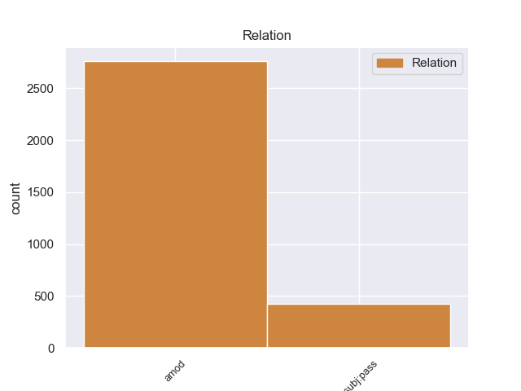
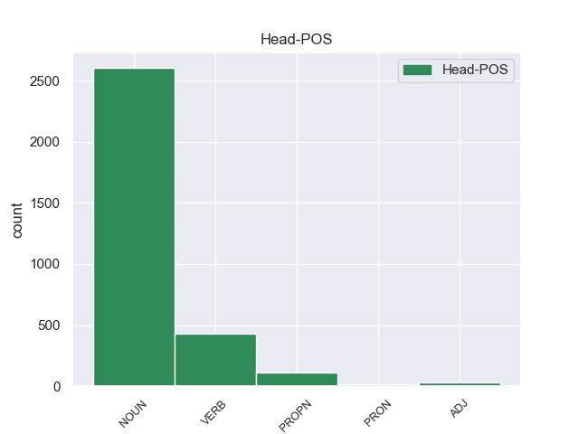
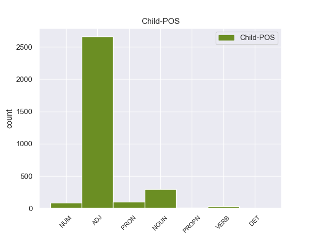

Distribution of features within this leaf



Agreement Rules sorted by frequency.
- When the dependent token is the adjectival modifier(amod) of the head token,
1 Αυτό _ _ _ _ 0 _ _ _
2 μπορεί _ _ _ _ 0 _ _ _
3 να _ _ _ _ 0 _ _ _
4 μην _ _ _ _ 0 _ _ _
5 οδηγήσει _ _ _ _ 0 _ _ _
6 σ _ _ _ _ 0 _ _ _
7 τη _ _ _ _ 0 _ _ _
8 λήξη _ _ _ _ 0 _ _ _
9 του _ _ _ _ 0 _ _ _
10 εν _ _ _ _ 0 _ _ _
11 λόγω _ _ _ _ 0 _ _ _
12 ζητήματος _ _ _ _ 0 _ _ _
13 αλλά _ _ _ _ 0 _ _ _
14 , _ _ _ _ 0 _ _ _
15 σ _ _ _ _ 0 _ _ _
16 τη _ _ _ _ 0 _ _ _
17 μορφή _ _ _ _ 0 _ _ _
18 υπό _ _ _ _ 0 _ _ _
19 την _ _ _ _ 0 _ _ _
20 οποία _ _ _ _ 0 _ _ _
21 την _ _ _ _ 0 _ _ _
22 λάβαμε _ _ _ _ 0 _ _ _
23 , _ _ _ _ 0 _ _ _
24 αυτή _ _ _ _ 0 _ _ _
25 η _ _ _ _ 0 _ _ _
26 αίτηση _ _ _ _ 0 _ _ _
27 άρσης _ _ _ _ 0 _ _ _
28 της _ _ _ _ 0 _ _ _
29 ασυλίας _ _ _ _ 0 _ _ _
30 ήταν _ _ _ _ 0 _ _ _
31 , _ _ _ _ 0 _ _ _
32 κατά _ _ _ _ 0 _ _ _
33 την _ _ _ _ 0 _ _ _
34 άποψη _ _ _ _ 0 _ _ _
35 της _ _ _ _ 0 _ _ _
36 Επιτροπής _ _ _ _ 0 _ _ _
37 Νομικών νομικός ADJ ADJ Case=Gen|Gender=Neut|Number=Plur 38 amod _ _
38 Θεμάτων θέμα NOUN NOUN Case=Gen|Gender=Neut|Number=Plur 0 _ _ _
39 , _ _ _ _ 0 _ _ _
40 απαράδεκτη _ _ _ _ 0 _ _ _
41 , _ _ _ _ 0 _ _ _
42 άποψη _ _ _ _ 0 _ _ _
43 την _ _ _ _ 0 _ _ _
44 οποία _ _ _ _ 0 _ _ _
45 συνιστώ _ _ _ _ 0 _ _ _
46 σ _ _ _ _ 0 _ _ _
47 το _ _ _ _ 0 _ _ _
48 Σώμα _ _ _ _ 0 _ _ _
49 να _ _ _ _ 0 _ _ _
50 υιοθετήσει _ _ _ _ 0 _ _ _
51 . _ _ _ _ 0 _ _ _
1 Ευελπιστώ _ _ _ _ 0 _ _ _
2 ότι _ _ _ _ 0 _ _ _
3 η _ _ _ _ 0 _ _ _
4 απόφαση απόφαση NOUN NOUN Case=Nom|Gender=Fem|Number=Sing 17 nsubj:pass _ _
5 αυτή _ _ _ _ 0 _ _ _
6 , _ _ _ _ 0 _ _ _
7 συμπεριλαμβανομένης _ _ _ _ 0 _ _ _
8 και _ _ _ _ 0 _ _ _
9 της _ _ _ _ 0 _ _ _
10 αιτιολογικής _ _ _ _ 0 _ _ _
11 έκθεσης _ _ _ _ 0 _ _ _
12 που _ _ _ _ 0 _ _ _
13 την _ _ _ _ 0 _ _ _
14 συνοδεύει _ _ _ _ 0 _ _ _
15 , _ _ _ _ 0 _ _ _
16 θα _ _ _ _ 0 _ _ _
17 διαβιβαστεί διαβιβάζω VERB VERB Aspect=Perf|Mood=Ind|Number=Sing|Person=3|VerbForm=Fin|Voice=Pass 0 _ _ _
18 σ _ _ _ _ 0 _ _ _
19 τις _ _ _ _ 0 _ _ _
20 γαλλικές _ _ _ _ 0 _ _ _
21 αρχές _ _ _ _ 0 _ _ _
22 , _ _ _ _ 0 _ _ _
23 εφόσον _ _ _ _ 0 _ _ _
24 υπερψηφιστεί _ _ _ _ 0 _ _ _
25 από _ _ _ _ 0 _ _ _
26 το _ _ _ _ 0 _ _ _
27 Κοινοβούλιο _ _ _ _ 0 _ _ _
28 . _ _ _ _ 0 _ _ _
Disagree Examples:
1 Πράγματι _ _ _ _ 0 _ _ _
2 , _ _ _ _ 0 _ _ _
3 η _ _ _ _ 0 _ _ _
4 Σύμβαση _ _ _ _ 0 _ _ _
5 του _ _ _ _ 0 _ _ _
6 1991 _ _ _ _ 0 _ _ _
7 σχετικά _ _ _ _ 0 _ _ _
8 με _ _ _ _ 0 _ _ _
9 την _ _ _ _ 0 _ _ _
10 εκτέλεση εκτέλεση NOUN NOUN Case=Acc|Gender=Fem|Number=Sing 0 _ _ _
11 αλλοδαπών αλλοδαπός ADJ ADJ Case=Gen|Gender=Fem|Number=Plur 10 amod _ _
12 αποφάσεων _ _ _ _ 0 _ _ _
13 σε _ _ _ _ 0 _ _ _
14 ποινικές _ _ _ _ 0 _ _ _
15 υποθέσεις _ _ _ _ 0 _ _ _
16 - _ _ _ _ 0 _ _ _
17 η _ _ _ _ 0 _ _ _
18 οποία _ _ _ _ 0 _ _ _
19 διαφορετικά _ _ _ _ 0 _ _ _
20 θα _ _ _ _ 0 _ _ _
21 ήταν _ _ _ _ 0 _ _ _
22 σχετική _ _ _ _ 0 _ _ _
23 με _ _ _ _ 0 _ _ _
24 το _ _ _ _ 0 _ _ _
25 θέμα _ _ _ _ 0 _ _ _
26 μας _ _ _ _ 0 _ _ _
27 - _ _ _ _ 0 _ _ _
28 δεν _ _ _ _ 0 _ _ _
29 έχει _ _ _ _ 0 _ _ _
30 τεθεί _ _ _ _ 0 _ _ _
31 ακόμα _ _ _ _ 0 _ _ _
32 σε _ _ _ _ 0 _ _ _
33 ισχύ _ _ _ _ 0 _ _ _
34 , _ _ _ _ 0 _ _ _
35 δέκα _ _ _ _ 0 _ _ _
36 χρόνια _ _ _ _ 0 _ _ _
37 ύστερα _ _ _ _ 0 _ _ _
38 από _ _ _ _ 0 _ _ _
39 την _ _ _ _ 0 _ _ _
40 υπογραφή _ _ _ _ 0 _ _ _
41 της _ _ _ _ 0 _ _ _
42 . _ _ _ _ 0 _ _ _
1 Υπάρχει _ _ _ _ 0 _ _ _
2 μία _ _ _ _ 0 _ _ _
3 ομάδα _ _ _ _ 0 _ _ _
4 τροπολογιών _ _ _ _ 0 _ _ _
5 που _ _ _ _ 0 _ _ _
6 υπέβαλαν _ _ _ _ 0 _ _ _
7 οι _ _ _ _ 0 _ _ _
8 συνάδελφοι _ _ _ _ 0 _ _ _
9 της _ _ _ _ 0 _ _ _
10 Ομάδας ομάδα NOUN NOUN Case=Gen|Gender=Fem|Number=Sing 0 _ _ _
11 των _ _ _ _ 0 _ _ _
12 Πρασίνων πράσινος ADJ ADJ Case=Gen|Gender=Masc|Number=Plur 10 amod _ _
13 / _ _ _ _ 0 _ _ _
14 Ευρωπαϊκής _ _ _ _ 0 _ _ _
15 Ελεύθερης _ _ _ _ 0 _ _ _
16 Συμμαχίας _ _ _ _ 0 _ _ _
17 , _ _ _ _ 0 _ _ _
18 που _ _ _ _ 0 _ _ _
19 προσπαθούν _ _ _ _ 0 _ _ _
20 να _ _ _ _ 0 _ _ _
21 πουν _ _ _ _ 0 _ _ _
22 ότι _ _ _ _ 0 _ _ _
23 η _ _ _ _ 0 _ _ _
24 έγκριση _ _ _ _ 0 _ _ _
25 του _ _ _ _ 0 _ _ _
26 ευρωπαϊκού _ _ _ _ 0 _ _ _
27 εντάλματος _ _ _ _ 0 _ _ _
28 σύλληψης _ _ _ _ 0 _ _ _
29 εξαρτάται _ _ _ _ 0 _ _ _
30 από _ _ _ _ 0 _ _ _
31 τη _ _ _ _ 0 _ _ _
32 βελτίωση _ _ _ _ 0 _ _ _
33 συγκεκριμένων _ _ _ _ 0 _ _ _
34 δικαστικών _ _ _ _ 0 _ _ _
35 προτύπων _ _ _ _ 0 _ _ _
36 σ _ _ _ _ 0 _ _ _
37 την _ _ _ _ 0 _ _ _
38 Ευρωπαϊκή _ _ _ _ 0 _ _ _
39 Ένωση _ _ _ _ 0 _ _ _
40 . _ _ _ _ 0 _ _ _
1 Κύριε _ _ _ _ 0 _ _ _
2 Πρόεδρε _ _ _ _ 0 _ _ _
3 , _ _ _ _ 0 _ _ _
4 δεν _ _ _ _ 0 _ _ _
5 τρέφω _ _ _ _ 0 _ _ _
6 κανένα _ _ _ _ 0 _ _ _
7 σεβασμό _ _ _ _ 0 _ _ _
8 προς _ _ _ _ 0 _ _ _
9 εκείνους _ _ _ _ 0 _ _ _
10 που _ _ _ _ 0 _ _ _
11 επιδιώκουν _ _ _ _ 0 _ _ _
12 να _ _ _ _ 0 _ _ _
13 θυσιάσουν _ _ _ _ 0 _ _ _
14 την _ _ _ _ 0 _ _ _
15 ζωή ζωή NOUN NOUN Case=Acc|Gender=Fem|Number=Sing 0 _ _ _
16 των _ _ _ _ 0 _ _ _
17 υπολοίπων υπόλοιπος ADJ ADJ Case=Gen|Gender=Fem|Number=Plur 15 amod _ _
18 για _ _ _ _ 0 _ _ _
19 να _ _ _ _ 0 _ _ _
20 επιτύχουν _ _ _ _ 0 _ _ _
21 τους _ _ _ _ 0 _ _ _
22 στόχους _ _ _ _ 0 _ _ _
23 τους _ _ _ _ 0 _ _ _
24 . _ _ _ _ 0 _ _ _
1 Ας _ _ _ _ 0 _ _ _
2 ποντάρουμε _ _ _ _ 0 _ _ _
3 λοιπόν _ _ _ _ 0 _ _ _
4 σ _ _ _ _ 0 _ _ _
5 την _ _ _ _ 0 _ _ _
6 ικανότητά _ _ _ _ 0 _ _ _
7 της _ _ _ _ 0 _ _ _
8 να _ _ _ _ 0 _ _ _
9 επιφέρει _ _ _ _ 0 _ _ _
10 περαιτέρω _ _ _ _ 0 _ _ _
11 κινητοποιήσεις κινητοποίηση NOUN NOUN Case=Acc|Gender=Fem|Number=Plur 0 _ _ _
12 σ _ _ _ _ 0 _ _ _
13 την _ _ _ _ 0 _ _ _
14 εαρινή εαρινός ADJ ADJ Case=Acc|Gender=Fem|Number=Sing 11 amod _ _
15 Σύνοδο _ _ _ _ 0 _ _ _
16 Κορυφής _ _ _ _ 0 _ _ _
17 της _ _ _ _ 0 _ _ _
18 Βαρκελώνης _ _ _ _ 0 _ _ _
19 ! _ _ _ _ 0 _ _ _
1 Επίσης _ _ _ _ 0 _ _ _
2 θετική _ _ _ _ 0 _ _ _
3 θεωρώ _ _ _ _ 0 _ _ _
4 την _ _ _ _ 0 _ _ _
5 υπόσχεση _ _ _ _ 0 _ _ _
6 ότι _ _ _ _ 0 _ _ _
7 μετά _ _ _ _ 0 _ _ _
8 από _ _ _ _ 0 _ _ _
9 την _ _ _ _ 0 _ _ _
10 περιορισμένη _ _ _ _ 0 _ _ _
11 δέσμη _ _ _ _ 0 _ _ _
12 μέτρων _ _ _ _ 0 _ _ _
13 που _ _ _ _ 0 _ _ _
14 θεσπίσθηκε _ _ _ _ 0 _ _ _
15 πριν _ _ _ _ 0 _ _ _
16 από _ _ _ _ 0 _ _ _
17 μερικές _ _ _ _ 0 _ _ _
18 εβδομάδες _ _ _ _ 0 _ _ _
19 για _ _ _ _ 0 _ _ _
20 την _ _ _ _ 0 _ _ _
21 υλοποίηση _ _ _ _ 0 _ _ _
22 της _ _ _ _ 0 _ _ _
23 αναθεώρησης _ _ _ _ 0 _ _ _
24 του _ _ _ _ 0 _ _ _
25 συντάγματος _ _ _ _ 0 _ _ _
26 θα _ _ _ _ 0 _ _ _
27 ακολουθήσει _ _ _ _ 0 _ _ _
28 και _ _ _ _ 0 _ _ _
29 μια _ _ _ _ 0 _ _ _
30 επόμενη _ _ _ _ 0 _ _ _
31 δέσμη _ _ _ _ 0 _ _ _
32 νομοθετικών _ _ _ _ 0 _ _ _
33 μέτρων _ _ _ _ 0 _ _ _
34 με _ _ _ _ 0 _ _ _
35 το _ _ _ _ 0 _ _ _
36 ίδιο _ _ _ _ 0 _ _ _
37 αντικείμενο _ _ _ _ 0 _ _ _
38 όπου _ _ _ _ 0 _ _ _
39 , _ _ _ _ 0 _ _ _
40 μεταξύ _ _ _ _ 0 _ _ _
41 άλλων _ _ _ _ 0 _ _ _
42 , _ _ _ _ 0 _ _ _
43 θα _ _ _ _ 0 _ _ _
44 συμπεριλαμβάνονται συμπεριλαμβάνω VERB VERB Aspect=Imp|Mood=Ind|Number=Plur|Person=3|Tense=Pres|VerbForm=Fin|Voice=Pass 0 _ _ _
45 ο _ _ _ _ 0 _ _ _
46 νόμος νόμος NOUN NOUN Case=Nom|Gender=Masc|Number=Sing 44 nsubj:pass _ _
47 για _ _ _ _ 0 _ _ _
48 τον _ _ _ _ 0 _ _ _
49 Τύπο _ _ _ _ 0 _ _ _
50 , _ _ _ _ 0 _ _ _
51 ο _ _ _ _ 0 _ _ _
52 νόμος _ _ _ _ 0 _ _ _
53 για _ _ _ _ 0 _ _ _
54 την _ _ _ _ 0 _ _ _
55 ελευθερία _ _ _ _ 0 _ _ _
56 του _ _ _ _ 0 _ _ _
57 συναθροίζεσθαι _ _ _ _ 0 _ _ _
58 , _ _ _ _ 0 _ _ _
59 το _ _ _ _ 0 _ _ _
60 ποινικό _ _ _ _ 0 _ _ _
61 δίκαιο _ _ _ _ 0 _ _ _
62 , _ _ _ _ 0 _ _ _
63 καθώς _ _ _ _ 0 _ _ _
64 και _ _ _ _ 0 _ _ _
65 ο _ _ _ _ 0 _ _ _
66 νόμος _ _ _ _ 0 _ _ _
67 για _ _ _ _ 0 _ _ _
68 τις _ _ _ _ 0 _ _ _
69 αρμοδιότητες _ _ _ _ 0 _ _ _
70 της _ _ _ _ 0 _ _ _
71 αστυνομίας _ _ _ _ 0 _ _ _
72 . _ _ _ _ 0 _ _ _